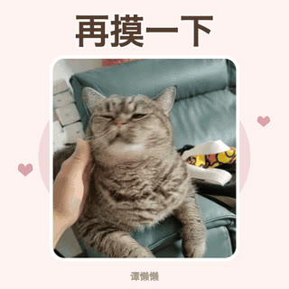
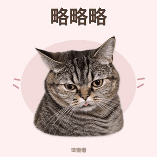

谭懒懒的表情包
打包下载 18 张
聊天版整包 · 约 13 MB
点开大图后可长按保存，单张页面也有高清版下载。
如果微信没有开始下载，请点右上角菜单，选择在浏览器中打开，再下载整包。
第二弹
10 张第一弹
8 张微信里怎么保存？
先打开一张大图，再长按动图，使用微信弹出的保存选项。若下载按钮没有响应，可从右上角菜单选择在浏览器中打开。
请保存原始 GIF，截图会变成静态图片。

聊天版整包 · 约 13 MB
点开大图后可长按保存，单张页面也有高清版下载。
先打开一张大图，再长按动图，使用微信弹出的保存选项。若下载按钮没有响应，可从右上角菜单选择在浏览器中打开。
请保存原始 GIF，截图会变成静态图片。